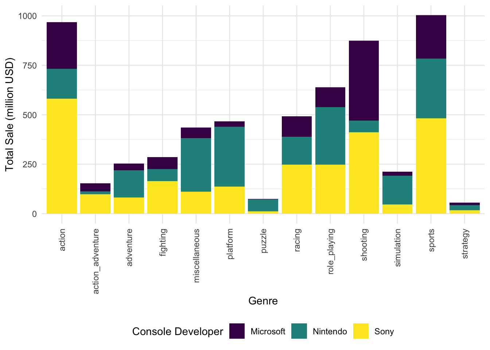

Final Report
11/23/2020
Motivation
Video games have been around for decades, providing entertainment for children and adults alike. They have been involved significantly from the early days of computer games and the early versions of Nintendo and Atari. As technology continues to improve, so do video games. Video game creation has become increasingly complicated, and the cost of creating a game to run one of the major consoles has risen with this greater complexity.
No longer just an entertainment medium, gaming has rapidly become the largest sector in terms of production and marketing. In fact, it is larger than the movie and music industry combined, and it is only growing. It is no surprise that many big companies want to bring revenues from video games. There are currently more than 2.5 billion gamers across the world. Analysts reported that in 2019, the gaming business was estimated to be at 152.1 billion in which console was the second fastest-growing segment, only after mobile gaming. It is generally known that the top largest revenue regions were Asia-Pacific, North America, and Western Europe. In this project, we are going to analyze the 2001-2020 global games market per device from Nintendo, Sony, and Microsoft, and learn about the factors that influence their total revenues.
Initial Questions
For games run on consoles developed by Nintendo, Sony and Microsoft, we want to know separately:
How does the sales of games change over time?
What is the most popular/profitable game genre on each companies’ consoles?
Is there an association between critic scores and game sales? In which direction?
Does the number of consoles the games are released on influence their sales?
Data Collection
Our dataset is a combination of data scraped from VGChartz, a reliable video game sales tracking website, and Metacritic, a well-known review aggregate site for video games. Some information of our dataset comes from VGChartz while others come from Metacritic. Based on the raw dataset, we also created some other new columns.
There are 7340 rows and 14 columns in our final dataset.
Important variables include:
title: unique title of each gameconsole: platform on which the game was released or is playable (i.e. Switch, PS4, etc.)console_developer: company produces the consolesn_platforms: number of platforms per game titlegenre: genre of the gamerelease_year: year of the game’s releasecritic_score: Aggregate score compiled by the websitestotal_sale: global revenues (millions $)na_sale: revenues in North America (millions $)pal_sale: revenues in Europe (millions $)japan_sale: revenues in Japan (millions $)other_sale: revenues in other regions (millions $)
The first ten rows of the dataset is as follow:
head(games_df) %>%
knitr::kable(format = "html", col.names = colnames(games_df), align="c") %>%
kableExtra::kable_styling("striped", "hover", row_label_position = "c") %>%
kableExtra::scroll_box(width = "100%", height = "200px")| title | console | console_developer | n_platforms | genre | release_year | publisher | developer | critic_score | total_sale | na_sale | pal_sale | japan_sale | other_sale |
|---|---|---|---|---|---|---|---|---|---|---|---|---|---|
| Grand Theft Auto: San Andreas | PlayStation 2 | Sony | 3 | action | 2004 | Rockstar Games | Rockstar North | 9.5 | 20.81 | 9.43 | 0.40 | 0.41 | 10.57 |
| Grand Theft Auto V | PlayStation 3 | Sony | 5 | action | 2013 | Rockstar Games | Rockstar North | 9.4 | 20.32 | 6.37 | 9.85 | 0.99 | 3.12 |
| Grand Theft Auto V | PlayStation 4 | Sony | 5 | action | 2014 | Rockstar Games | Rockstar North | 9.7 | 19.39 | 6.06 | 9.71 | 0.60 | 3.02 |
| Grand Theft Auto: Vice City | PlayStation 2 | Sony | 2 | action | 2002 | Rockstar Games | Rockstar North | 9.6 | 16.15 | 8.41 | 5.49 | 0.47 | 1.78 |
| Grand Theft Auto III | PlayStation 2 | Sony | 2 | action | 2001 | Rockstar Games | DMA Design | 9.5 | 13.10 | 6.99 | 4.51 | 0.30 | 1.30 |
| Grand Theft Auto IV | Xbox 360 | Microsoft | 3 | action | 2008 | Rockstar Games | Rockstar North | 10.0 | 11.09 | 6.80 | 3.11 | 0.14 | 1.04 |
Exploratory Analyses
Global sales and Number of games released across the years
totalsale = games_df %>%
group_by(release_year) %>%
summarize(
totalsale = sum(total_sale)
) %>%
drop_na() %>%
ggplot(aes(x = release_year, y = totalsale)) +
geom_col() +
labs(x = "Year", y = "Total Sale (million USD)")
totalcount = games_df %>%
group_by(release_year) %>%
summarize(
count = n()
) %>%
drop_na() %>%
ggplot(aes(x = release_year, y = count)) +
geom_col() +
labs(x = "Year", y = "Number of Games")
totalsale + totalcount
The left and right bar graphs showed the annual global revenues of video games (in millions USD) and the total of video games respectively from 2001 to 2020. Video game industry increased at a rapid rate after 2001 in which it reached a peak of more than $700 million in global revenue in 2009 in accordance with the highest total video games produced in the same year. The similar trend appeared in both plots in which from 2012 to 2016, there was a drop in both the annual total sales and the number of games released. After 2016, the number of games released remained stable while the total revenues continued to decline.
Global sales of games per genre
games_df %>%
ggplot(aes(x = genre, y = total_sale, fill = console_developer)) +
geom_bar(stat = "identity", position = "stack") +
theme(axis.text.x = element_text(angle = 90, vjust = 0.5, hjust = 1)) +
labs(x = "Genre", y = "Total Sale (million USD)", fill = "Console Developer")
Sports games have been around since the beginning of gaming culture, and it has been one of the most popular genres with their global sales approximately 1.0 billion USD. Challenging the player’s reflexes and coordination, Action and Shooting are the second and third genres in which their total sales are more than 8.75 billion USD.
The revenues of each company, however, were not the same across the genres. Nintendo earned more profits from making games in sports, role-playing, and platform, with each of them brought back more than 250 million USD. Sony’s gaming sales were mostly from the action, sports, and shooting genre with each brought approximately more than 500 million USD. Microsoft, despite the latest competitor to enter the video game industry, dominates the field in shooting, sports, and action genres. The company’s highest revenue was from shooting games with more than 350 million USD.
Relationship between critic score and total revenues
games_df %>%
filter(total_sale < 5) %>%
ggplot(aes(x = critic_score, y = total_sale, color = console_developer)) +
geom_point(alpha = 0.2) +
geom_smooth(method = 'lm', se = F) +
labs(x = "Critic Score", y = "Total Sale (million USD)", color = "Console Developer")
Critic consensus on a game usually has some correlation with the success of the game in the market in which the critic score can influence the consumer’s decision to buy games. Sony’s games had the best correlation of the critic score and the total sales, their games overall had the highest scores and the global revenues of approximately more than 1.0 million USD. Microsoft and Nintendo, respectively, are the second and third companies that had lower overall total sales and critic scores relationship. Overall, our data shows that the majority of games with higher scores were produced by Sony and thus, having the highest total revenues.
Platform Availability
games_df %>%
mutate(n_platforms = as.factor(n_platforms)) %>%
ggplot(aes(x = n_platforms, y = log(total_sale))) +
geom_boxplot() +
labs(x = "Number of Platforms", y = "Total Sale Log(million USD)")
Another factor that has a big impact on how well a game sales is the number of platforms the game is available. Most players do not have multiple consoles and a game that releases on multiple platforms has a much higher potential customer number. The plot showed that most players owned only 1 or 2 consoles. There was a large distribution of total revenues in games sold in 1 and 2 platforms.
Anova Test
games_df = games_df %>%
mutate(
genre =
case_when(
genre %in% c('action','action_adventure',"adventure", "fighting") ~ 'Action',
genre %in% c('racing','sports') ~ 'Competition',
genre %in% c('role_playing', 'simulation') ~ 'Experience',
genre %in% c('strategy','puzzle') ~ 'Intelligence',
genre %in% c('platform', 'shooting')~ 'Agility',
genre == 'miscellaneous' ~ "Miscellaneous")
) %>%
mutate(
n_platforms =
case_when(n_platforms == '1' ~ 'small',
n_platforms >= '2' & n_platforms <= '3' ~ 'medium',
n_platforms >= '4' ~ 'large'),
n_platforms = as.factor(n_platforms)
) %>%
dplyr::select(title:genre,critic_score, total_sale)By Analysis of Variance (ANOVA) we can conduct comparisons among groups of our interested categorical variables : genre and n_platforms.In the test of genre, we want to answer the question: Whether there are true differences in games sales among different genres?
1. One-way ANOVA: Total_sale ~ genre
aov_mod_1 = aov(total_sale ~ genre, data = games_df)broom::tidy(aov_mod_1)## # A tibble: 2 x 6
## term df sumsq meansq statistic p.value
## <chr> <dbl> <dbl> <dbl> <dbl> <dbl>
## 1 genre 5 208. 41.5 10.3 6.76e-10
## 2 Residuals 7334 29440. 4.01 NA NAmulti_comp_1 = TukeyHSD(aov_mod_1)
plot(multi_comp_1)
With p.value < 0.001, we conclude that at least two of the genres have different average total_sales. Then Tukey’s method was performed to make pairwise comparisons. 7 of 15 comparisons (eg. Agility vs Competition) have significant differences in mean of total_sale.
2. ANOVA with interaction: Total_sale ~ console_developer * genre
aov_mod_2 = aov(total_sale ~ console_developer * genre, data = games_df)broom::tidy(aov_mod_2)## # A tibble: 4 x 6
## term df sumsq meansq statistic p.value
## <chr> <dbl> <dbl> <dbl> <dbl> <dbl>
## 1 console_developer 2 23.8 11.9 2.99 5.04e- 2
## 2 genre 5 213. 42.6 10.7 2.91e-10
## 3 console_developer:genre 10 251. 25.1 6.30 1.08e- 9
## 4 Residuals 7322 29159. 3.98 NA NAmulti_comp_2 = TukeyHSD(aov_mod_2)
ori_df =
broom::tidy(multi_comp_2) %>%
filter(term == 'console_developer:genre') %>%
na.omit()
multi_df =
ori_df %>%
filter(adj.p.value < 0.05)With p.value of the interaction term = 1.08e-9 < 0.001, we conclude that at least two of the interaction combinations have different average total_sales.From Tukey’s multiple comparisons we get that there are 36 significant different combinations among 153 combinations of console_developer and genre.
3. Conclusion
Anova tests above provide us evidence that indicate there are true differences in games sales among different groups of genre. When the console_developer changes, significant differences exist in subgroups as well. Thus it’s reasonable to include the interaction term console_developer : genre in the linear regression model.
Following similar procedures, we also conclude that significant differences exist in groups of n_platform (criteria of grouping: 1 ~ small, 2-3 ~ medium, 4-9 ~ large) and subgroups considering interaction with console_developer. Therefore we include the interaction term console_developer : n_platform in the linear regression model
Linear Regression
regression_df =
games_df %>%
filter(total_sale < 5) # cutoff outliers1. Build models:
Model 1: total_sale ~ console_developer * genre + console_developer * n_platforms.
Model 2: total_sale ~ console_developer * genre + console_developer * n_platforms + console_developer * critic_score
Model 3: total_sale ~ console_developer * genre + console_developer * critic_score
Model 4: total_sale ~ console_developer * n_platforms + console_developer * critic_score
We set the cutoff value at 5(million dollars). Model 2 contains interaction between console_developer and all interested predictors (genre, n_platform, critic_score) while Model 1,3,4 contain interaction between console_developer and two of interested predictors.
2. Cross validation:
We use crossv_mc method to create training and testing datasets and fit the above 4 candidate models. The violin plots below will show the distribution of RMSE values for each candidate model:
cv_df %>%
dplyr::select(starts_with("rmse")) %>%
pivot_longer(
everything(),
names_to = "model",
values_to = "rmse",
names_prefix = "rmse_"
) %>%
ggplot(aes(x = model, y = rmse)) +
geom_violin()
Base on these results, there’s clearly some improvement for adding console_developer*critic_score as an additional predictor and they suggests that the different critic score among the three developers could influence the total sale in some way.
Comparing model 2, 3, and 4, all of their RMSE are less than 0.8 though, the model 2 has the smallest RMSE distribution, which means it may fit better. As for 3 and 4, the distribution of them are just really similar but the range of RMSE in model 4 is less.
Hence, we finally choose model 2 and 4 for the final comparison and consider whether the model could be ‘superior’ by adding the predictor console_developer*genre.
ANOVA test:
3. Diagnosis and interpretation
In the selected model, we used Residuals vs Fitted values plot to detect unequal error variance (heteroscedasticity) and outliers.
regression_df =
games_df %>%
filter(total_sale < 5)
lm2 = lm(total_sale ~ console_developer*genre + console_developer*n_platforms + console_developer*critic_score, data = regression_df)
regression_df %>%
add_predictions(lm2) %>%
add_residuals(lm2) %>%
ggplot(aes(x = pred, y = resid))+
geom_point(alpha = 0.3)+
geom_smooth(method = 'lm', color = 'red')+
labs(x = 'fitted values of total_sales', y = 'model residuals', title = 'Residuals vs Fitted Values')
As shown in the graph, there are many outliers with residuals > 3. Although the mean of residual values is close to 0 and residuals have a horizontal relationship with fitted value, the distribution of residual values is skewed. This plot indicates that our model does not have ideally distributed residuals. make jeff’s table
coe_df = broom::tidy(lm2)
coe_df1 = coe_df[-c(2:11),] %>%
select(term, estimate, p.value) %>%
mutate(term = str_replace(term, "^console_developerNintendo:", "Nintendo: "),
term = str_replace(term, "^console_developerSony:", "Sony: "),
) %>%
knitr::kable(digits = 3)
coe_df1| term | estimate | p.value |
|---|---|---|
| (Intercept) | -0.835 | 0.000 |
| Nintendo: genreAgility | -0.102 | 0.110 |
| Sony: genreAgility | -0.071 | 0.239 |
| Nintendo: genreCompetition | -0.025 | 0.683 |
| Sony: genreCompetition | 0.054 | 0.321 |
| Nintendo: genreExperience | 0.067 | 0.393 |
| Sony: genreExperience | -0.249 | 0.001 |
| Nintendo: genreIntelligence | 0.129 | 0.256 |
| Sony: genreIntelligence | -0.205 | 0.089 |
| Nintendo: genreMiscellaneous | 0.350 | 0.002 |
| Sony: genreMiscellaneous | -0.204 | 0.062 |
| Nintendo: n_platformsmedium | 0.210 | 0.001 |
| Sony: n_platformsmedium | -0.002 | 0.979 |
| Nintendo: n_platformssmall | 0.286 | 0.000 |
| Sony: n_platformssmall | -0.140 | 0.046 |
| Nintendo: critic_score | -0.108 | 0.000 |
| Sony: critic_score | 0.052 | 0.001 |
We compare coefficients of interaction terms between console_developer and genre/n_platforms/critic_score in the first table.
Interpretation:
coe_df = broom::tidy(lm2)
coe_df2 = coe_df[c(1:11),] %>%
select(term, estimate, p.value) %>%
knitr::kable(digits = 3)
coe_df2| term | estimate | p.value |
|---|---|---|
| (Intercept) | -0.835 | 0.000 |
| console_developerNintendo | 0.488 | 0.000 |
| console_developerSony | -0.129 | 0.321 |
| genreAgility | 0.153 | 0.001 |
| genreCompetition | -0.031 | 0.464 |
| genreExperience | 0.058 | 0.360 |
| genreIntelligence | -0.224 | 0.023 |
| genreMiscellaneous | 0.205 | 0.022 |
| n_platformsmedium | -0.306 | 0.000 |
| n_platformssmall | -0.275 | 0.000 |
| critic_score | 0.230 | 0.000 |
In the second table, coefficients of single terms such as genreAgility, genreCompetition are shown.